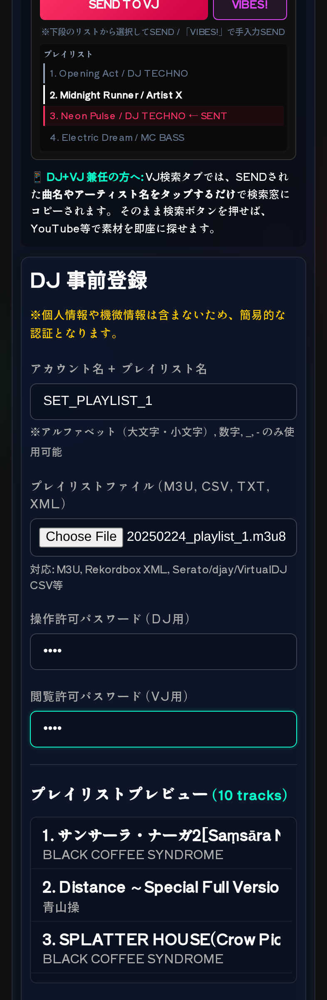
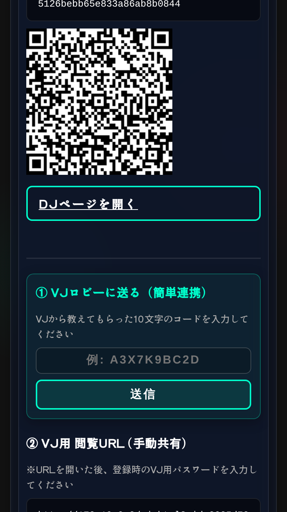
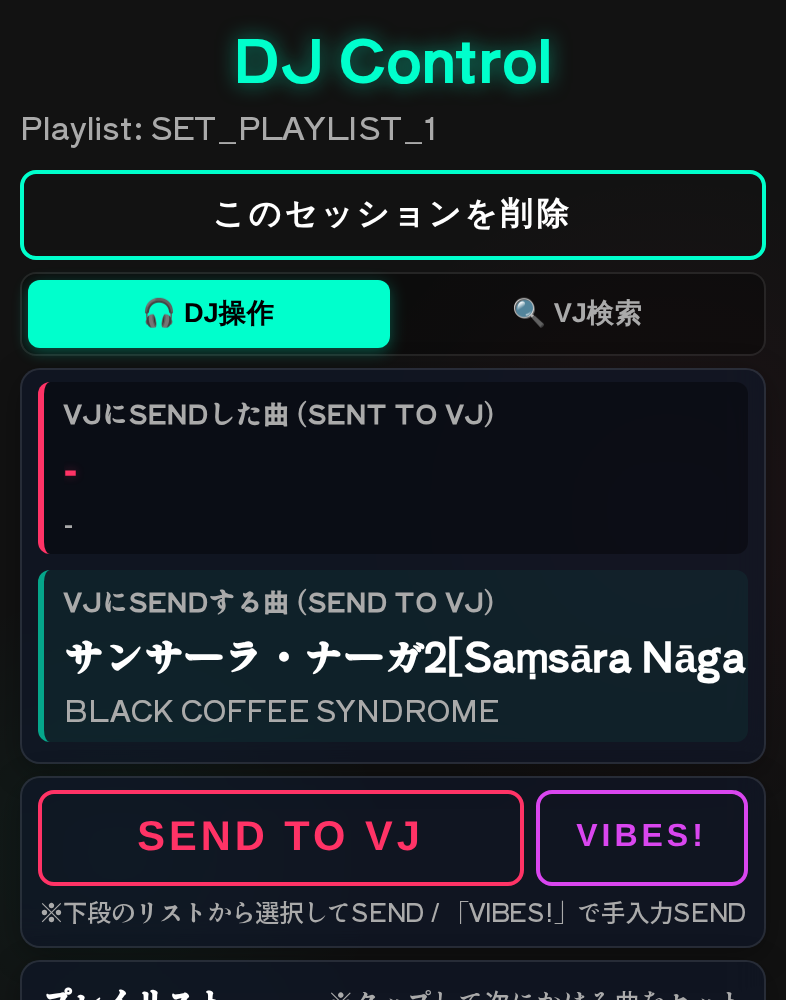
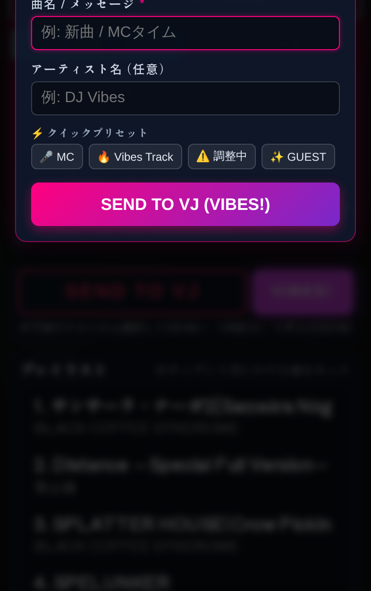
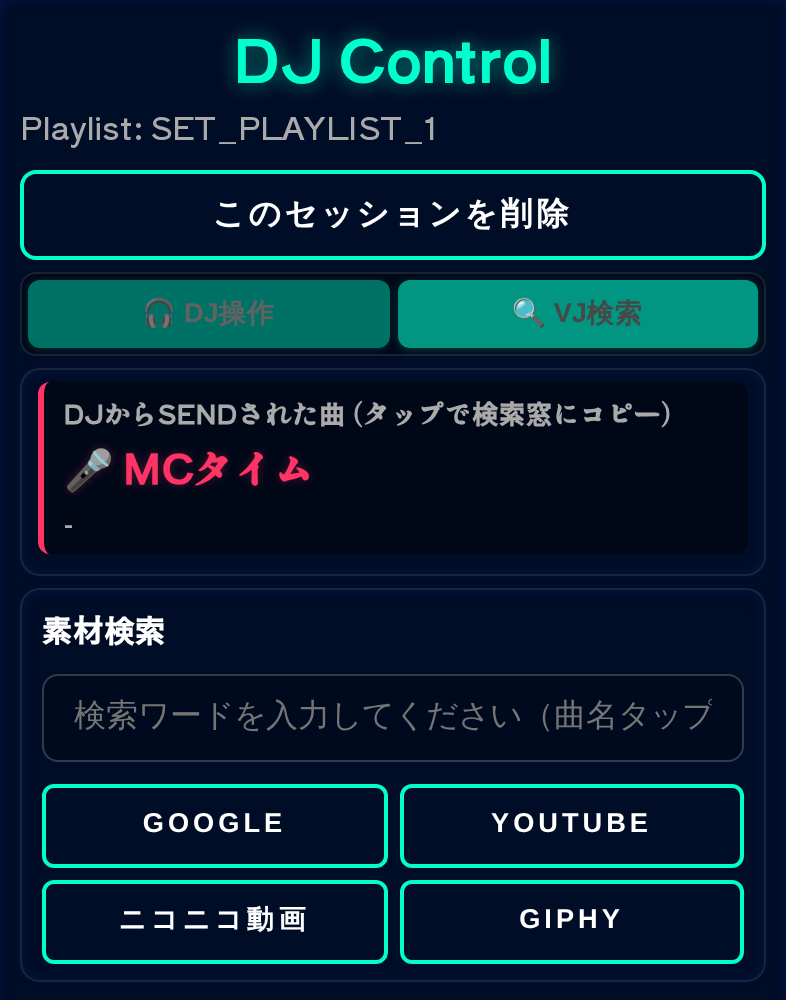
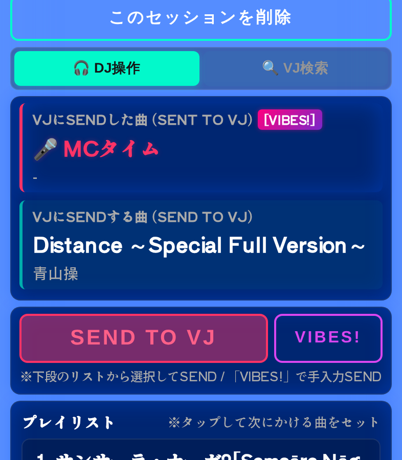

DJ向け 機能・操作説明書
プレイリストの曲情報をVJへ送り、素材の準備状況を受け取るための現場向けガイドです。スマートフォンの片手操作を前提に、登録から送信までを順番に説明します。
1事前登録する
トップページの登録フォームで、アカウント名とプレイリスト名を入力します。DJ用とVJ用の4桁パスワードをそれぞれ設定し、プレイリストファイルを選択してください。
M3U / M3U8CSVXMLTXT
Rekordbox、Serato、djay、VirtualDJなどから書き出したファイルを利用できます。
ファイルを選ぶとプレビューが表示されます。曲名とアーティスト名が正しく見えていることを確認してから、登録ボタンを押します。

2VJと連携する
登録が完了すると、DJ用URLとVJ用URLが発行されます。DJ用URLは自分で開き、VJ用URLはVJへ共有します。
- VJからロビーコードを受け取ります。
- 登録完了画面のロビーコード欄に10文字のコードを入力します。
- VJロビーへ送信を押します。
VJ側のロビーにセッション名が表示されたら連携完了です。URLやパスワードは、必要な相手にだけ共有してください。

3曲を選んでSENDする
DJ画面へログインすると、送信済み曲、次に送る曲、送信ボタン、プレイリストが表示されます。
- プレイリストから次にかける曲をタップします。
- 必要なら選択中の曲を変更します。
- SEND TO VJを押します。
送信後は、VJへ送った曲が上段に表示され、次の曲が送信用プレビューへ自動でセットされます。送信時には画面フラッシュで操作完了を知らせます。

4プレイリスト外はVIBES!
予定外の曲、MC、ゲスト、機器調整など、プレイリストにない情報は VIBES! から送信できます。
- VIBES!を押します。
- 曲名・メッセージを入力します。アーティスト名は任意です。
- クイックプリセットを使う場合は、MCなどのボタンを選びます。
- SEND TO VJ (VIBES!)を押します。
VJ側には手入力の情報として届きます。重要な連絡は短く、誤解のない文面にしてください。

5VJのREADYを確認する
VJが素材の準備を終えて READY を押すと、DJ画面の送信済み曲が強調表示され、[VJ READY] バッジが付きます。
READYは「素材準備完了」の通知です。次の選曲や演出判断の目安として確認してください。

6VJ検索タブを使う
VJ検索タブでは、VJへ送った曲のタイトルやアーティスト名を検索欄へコピーできます。曲名またはアーティスト名をタップしてから、検索先を選びます。
検索結果は別タブで開きます。DJとVJを兼任する場合の素材確認にも利用できます。

7セッションを削除・復帰する
セッションを終了する場合は、DJ画面上部の このセッションを削除 を使います。削除するとサーバー上のセッションとプレイリストが削除されるため、開催中は押さないでください。
同じブラウザでは、保存されたセッション情報から8時間以内であれば復帰できます。復帰時にもパスワード入力が必要です。

8困ったとき
- 曲が届かない: DJ用URL、VJ用URL、パスワード、通信状態を確認します。
- ロビーに出ない: VJから受け取ったコードが10文字か確認し、登録完了画面から再送します。
- 曲名が読みにくい: プレイリストの書き出し元で曲名・アーティスト情報を確認して再登録します。
- セッションを消してしまった: 削除後の復元はできないため、プレイリストを選び直して再登録します。